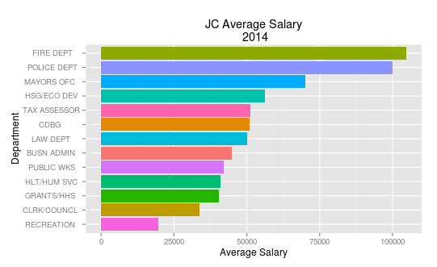
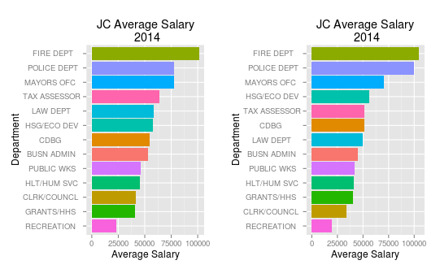
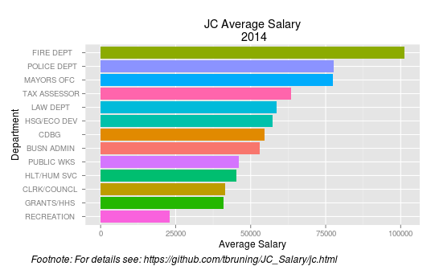
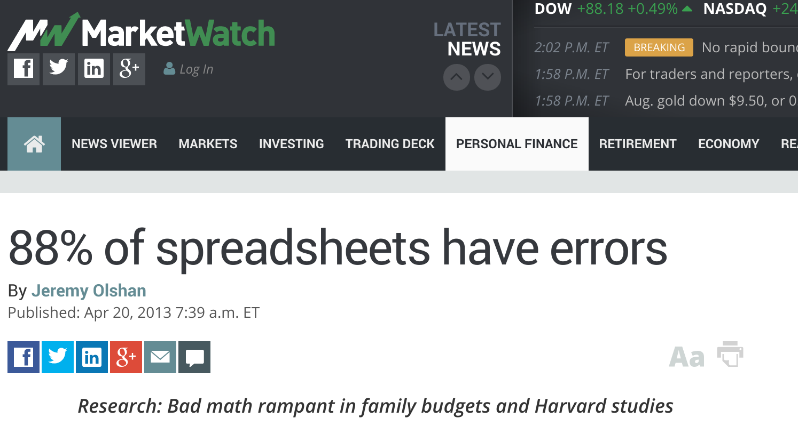

Reproducibility
Why Reproducibility
- YOU are responsible for your work
Replication is often times impossible
Validation of your methods
Validation of your data
So discrepancies can be identified
... and remedied (by you) or your vindication.No one is immune from errors
A former manager of mine said "The only people who don't make mistakes are those who don't do anything"
For Example
Your Work

For Example
Someone else's Work

For Example
Both Charts

For Example
Your chart, with documentation

Examples of faulty data analysis

What To Document
Data Source, including date
Includes the analytic data, not necessarily the raw data
Software Used, including version
Documentation of code and data
Challenge Results
Whether you do, or not, someone else looking at your data will.
Challenge your steps
- Your initial question
- The data source
- The processing you did
- Your analysis
- Your conclusions
Challenge Results (cont)
Challenge measures of Uncertainty
Challenge choices of terms to include in analysis
Think about alternative analysis